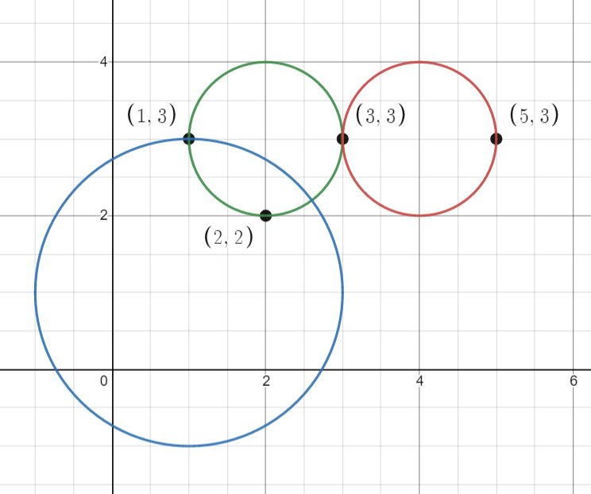
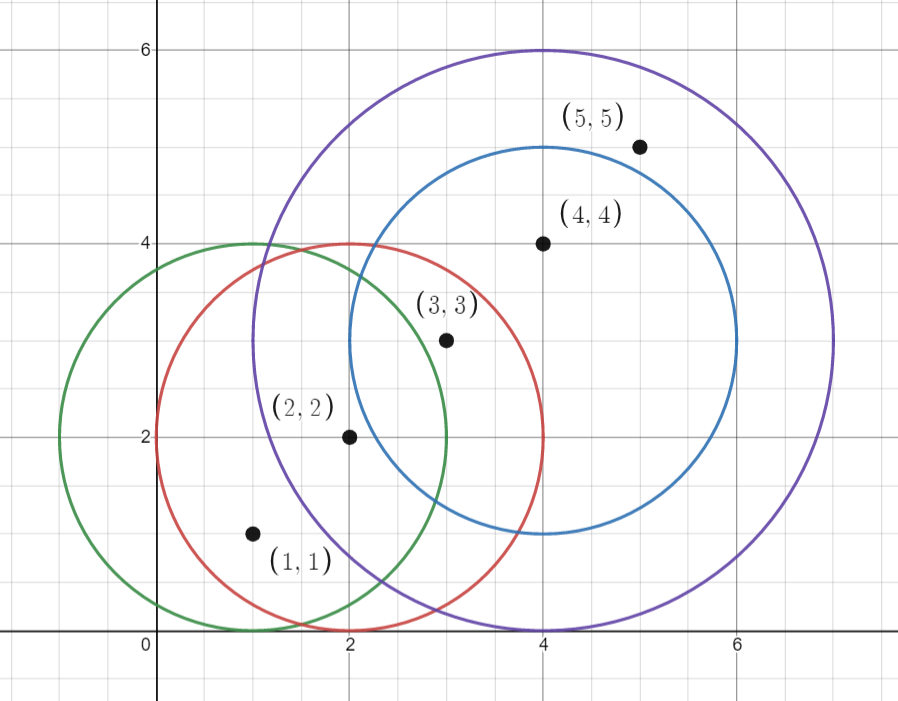

| Category | Difficulty | Likes | Dislikes |
|---|---|---|---|
| Algorithms | Medium | 1189 | 90 |
google
You are given an array points where points[i] = [xi, yi] is the coordinates of the ith point on a 2D plane. Multiple points can have the same coordinates.
You are also given an array queries where queries[j] = [xj, yj, rj] describes a circle centered at (xj, yj) with a radius of rj.
For each query queries[j], compute the number of points inside the jth circle. Points on the border of the circle are considered inside.
Return an array answer, where answer[j] is the answer to the jth query.
Example 1:

Input: points = [[1,3],[3,3],[5,3],[2,2]], queries = [[2,3,1],[4,3,1],[1,1,2]]
Output: [3,2,2]
Explanation: The points and circles are shown above.
queries[0] is the green circle, queries[1] is the red circle, and queries[2] is the blue circle.Example 2:

Input: points = [[1,1],[2,2],[3,3],[4,4],[5,5]], queries = [[1,2,2],[2,2,2],[4,3,2],[4,3,3]]
Output: [2,3,2,4]
Explanation: The points and circles are shown above.
queries[0] is green, queries[1] is red, queries[2] is blue, and queries[3] is purple.
Constraints:
1 <= points.length <= 500points[i].length == 20 <= xi, yi <= 5001 <= queries.length <= 500queries[j].length == 30 <= xj, yj <= 5001 <= rj <= 500
Follow up: Could you find the answer for each query in better complexity than O(n)?